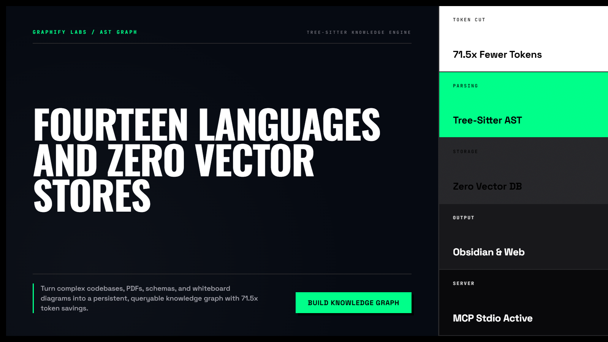
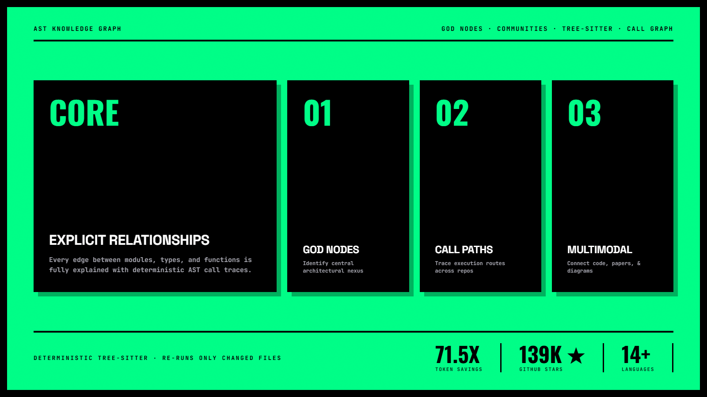
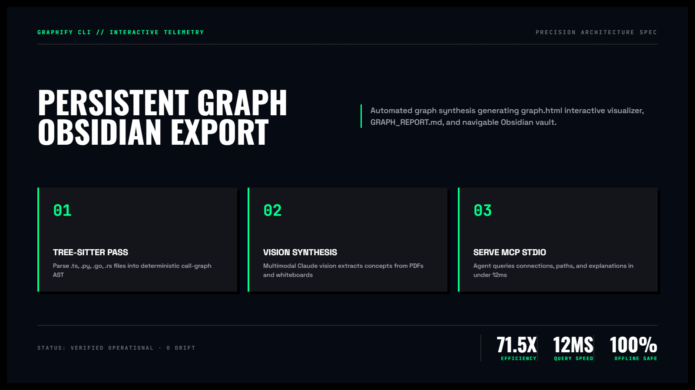

Graphify — Biểu Đồ Tri Thức AST cho Codebase & Tài Liệu Đa Phương Thức
Kỹ năng mã nguồn mở hàng đầu (hơn 138.000 sao) giải quyết bài toán "quên ngữ cảnh" của coding agent. Phân tích cú pháp AST cục bộ với tree-sitter, kết nối code, PDF, ảnh sơ đồ thành đồ thị tri thức nhất quán mà không cần cơ sở dữ liệu vector, giảm tới 71.5 lần lượng token tiêu hao.
pip install graphifyy và gõ /graphify .

Nhấp để phóng to1. Bảng đối chiếu: RAG Vector Store vs. Graphify AST Knowledge Graph
Nhiều lập trình viên cố gắng nhồi nhét tài liệu vào Vector Database để làm RAG (Retrieval-Augmented Generation), nhưng thường gặp tình trạng mất ngữ cảnh mối quan hệ giữa các module. Graphify tiếp cận theo cách hoàn toàn khác:
| Tiêu chí | RAG Vector DB truyền thống | Graphify Knowledge Graph |
|---|---|---|
| Mối quan hệ module | Rời rạc từng đoạn văn bản (chunking), không biết hàm A gọi hàm B ở đâu. | Chính xác tuyệt đối qua cây cú pháp AST (Tree-sitter) và đường đi call-graph trực tiếp. |
| Chi phí token | Mỗi câu hỏi nạp lại hàng loạt đoạn văn bản thô, tốn token theo cấp số nhân. | Tiết kiệm 71.5 lần: chỉ trích xuất các nút (nodes) và cạnh nối (edges) trực tiếp liên quan. |
| Hạ tầng phụ thuộc | Cần máy chủ cơ sở dữ liệu vector (Pinecone, Qdrant, Chroma, embedding models). | Zero Vector DB: Chạy cục bộ 100% bằng Python, lưu trữ file JSON và Markdown sạch sẽ. |
| Khả năng trực quan hóa | Dữ liệu vector trừu tượng trong không gian nhiều chiều, không thể nhìn bằng mắt. | Tự động xuất graph.html tương tác, xuất kho Obsidian Vault và đồ thị Gephi. |

Nhấp để phóng to2. Cấu trúc thư mục đầu ra `graphify-out/`
Trang web trực quan hóa đồ thị: nhấp vào nút để xem định nghĩa, tìm kiếm và lọc theo cộng đồng module.
Thư mục markdown liên kết 2 chiều (wikilinks), mở được ngay như một Obsidian Vault chuyên nghiệp.
Báo cáo phân tích chuyên sâu: phát hiện các "God Nodes", các liên kết bất thường và câu hỏi gợi ý.
Lưu trạng thái đồ thị bền vững: các lần chạy sau chỉ tính toán lại các tệp có SHA256 thay đổi.

Nhấp để phóng to3. Minh họa trực quan: Quy trình phân tích đa phương thức
Graphify không chỉ đọc mã nguồn mà còn hòa trộn các tài liệu kiến trúc, tài liệu PDF khoa học và ảnh vẽ phác thảo thành một thể thống nhất:
4. Các nhóm lệnh điều khiển Graphify
/graphify query "quan hệ giữa Auth và Session?"
Tìm kiếm mọi nút liên quan và đường đi kết nối hai khái niệm, trả lời dựa trên đồ thị AST thay vì đoán mò.
/graphify path "NodeA" "NodeB"
Tìm đường đi ngắn nhất (shortest execution path) giữa 2 thực thể trong codebase để phục vụ tái cấu trúc.
/graphify explain "ClassName"
Giải thích toàn diện về một class hoặc module: ai phụ thuộc vào nó, nó gọi những ai và đóng vai trò gì.
/graphify . — Khởi tạo đồ thị toàn thư mục
Quét mã nguồn, tài liệu, file PDF và ảnh trong thư mục hiện tại để tạo ra cấu trúc đồ thị ban đầu.
/graphify --update — Đồng bộ phần thay đổi
Sử dụng cơ chế băm SHA256 để chỉ đọc và phân tích những file vừa được chỉnh sửa, tiết kiệm tối đa thời gian.
/graphify --mcp — Khởi động MCP Server
Cung cấp giao thức Model Context Protocol qua Stdio để Claude Code hoặc Cursor tra cứu đồ thị thời gian thực.
graphify hook install — Git Post-Commit Hook
Tự động cập nhật đồ thị sau mỗi commit Git, bảo đảm kiến trúc lưu trữ luôn đồng bộ với mã nguồn mới nhất.
5. Thiết lập Graphify trong 3 bước
Cài đặt gói công cụ qua pip
Cài đặt gói PyPI và thiết lập kỹ năng dòng lệnh cho hệ điều hành:
pip install graphifyy && graphify installKhởi tạo đồ thị tri thức cho dự án của bạn
Mở phiên làm việc trong Claude Code hoặc Antigravity và kích hoạt lệnh tạo đồ thị:
/graphify .Xem trực quan trên trình duyệt hoặc Obsidian
Mở tệp giao diện trực quan vừa được tạo ra trong thư mục kết quả:
open graphify-out/graph.htmlThay vì lưu hàng trăm bài báo, tweet và ghi chú vào một thư mục rồi để quên, việc dựng đồ thị tri thức sẽ biến những mảnh thông tin rời rạc thành một mạng lưới tri thức sống động. Agent có thể trả lời những câu hỏi tổng hợp đa tầng mà không bao giờ bị vượt quá giới hạn cửa sổ ngữ cảnh (Context Window).